Projeto de renovação do Certificado de Aprovação (CA) das vestimentas de proteção retardantes a chamas / arco elétrico da Visual Work (calça, camisa e macacão — tecido Jupiter, 3 famílias), sob a Portaria 672. Os CAs atuais (Macacão 50171, Calça 50173, Camisa 50174) são válidos até 02/2027 — esse vencimento é o prazo real do projeto. Como a empresa não possui ISO 9001, aplica-se a Tabela 3 (requisitos mínimos do SGQ — "mini ISO 9001").
O prazo é dominado por prazos externos (laboratório, OCP e Ministério do Trabalho). As tarefas do SGQ (blocos A–D) alimentam principalmente a fase de manutenção.
Rota nacional (alternativa): laboratório 6–7 meses → CA em ~11–12 meses. A escolha do laboratório está pendente (ver Decisões).
Proposta comercial e apuração de gastos enviadas pela CLS Consulting após a 2ª reunião. Pendente de decisão do Seu Cayro.
O modelo é "a CLS entra e a empresa sai": elaboração documental de todos os requisitos da Tabela 3 (7.1.5 a 10.2 + SAC/tratativa de reclamações) e da documentação técnica (memorial descritivo, desenho técnico, manual de instruções/uso, arte de etiquetas e de embalagens). Inclui auditoria interna do produto antes da certificação, acompanhamento da auditoria da OCP, dos laudos de laboratório e da emissão do CA junto ao Ministério do Trabalho (MTE).
Estas definições destravam o cronograma — a maioria depende do Seu Cayro. Enquanto não decididas, o cronograma assume a rota ITEX.
| Decisão / item | Responsável | Prazo | Prioridade | Observação |
|---|---|---|---|---|
| Avaliar proposta da CLS e decidir contratação | Cayro + Lanny | 04/08/2026 | Urgente | ✅ Proposta recebida (R$30k: 5k + 10× R$2,5k). Ver seção "Proposta CLS Consulting". Exclui OCP/laboratório/viagem. |
| Definir escopo: 3 famílias ou só calça+camisa | Cayro | 04/08/2026 | Alta | Macacão só compensa com volume. Custo de OCP/lab é por família. |
| Definir laboratório: ITEX ou nacionais | Cayro + Cléber | 08/08/2026 | Alta | ITEX: rápido, euro à vista. Nacional: mais barato, pós-pago, mais lento. |
| Negociar com a Cedro o custeio dos reensaios | Lanny | 30/09/2026 | Normal | Reensaios de 20/40 meses (~R$30k cada) pelo volume de tecido comprado. |
| Consolidar orçamento do CA (5 anos) | Cléber | 08/08/2026 | Alta | Cruzar com fluxo de caixa (empresa em aperto financeiro). |
| Item | Valor | Forma de pagamento |
|---|---|---|
| Consultoria CLS | R$30.000 | R$5.000 entrada + 10× R$2.500 (dia 10) |
| OCP (5 anos, com manutenções) | ~R$60.000 | R$12.000 (3×) + 40× R$1.200 |
| Laboratório inicial — nacional | R$27.800 | SENAI CETIQT R$18k + IEE/USP R$8k + LENCO R$1,8k · pós-laudo (SENAI/CETIIC em 3×) |
| Laboratório inicial — ITEX/AITEX (alternativa) | 5.800€ (~R$36k) | Euro, à vista (antecipado) · ~3 meses |
| NIMASSEG (Animaseg / Adriana) | R$600 | R$200/família |
| Subtotal inicial (rota nacional) | ~R$118.400 | — |
| Reensaio 20 meses | ~R$26.000 (nac.) / 5.000€ (AITEX) | Recorrente — negociar com o fabricante do tecido |
| Reensaio 40 meses | ~R$26.000 (nac.) / 5.000€ (AITEX) | Recorrente — negociar com o fabricante do tecido |
| Viagem/hospedagem (auditoria) | Variável | Por conta da empresa |
A rota ITEX/AITEX encurta o laboratório para ~3 meses (pago em euro à vista), viabilizando o CA em ~fev/2027; a rota nacional é mais barata e pós-paga, mas leva 6–7 meses.
Pipeline técnico/regulatório (Portaria 672). Cronograma provisório na rota ITEX.
| Etapa | Prazo | Prioridade | Observação |
|---|---|---|---|
| Enviar insumos à certificadora | 15/08/2026 | Alta | Lista de funcionários c/ cargos + vídeo panorâmico da fábrica (Lanny). |
| Documentação técnica | 25/08/2026 | Alta | Memorial descritivo, desenho técnico, manual de instruções. |
| Atualizar arte das etiquetas | 25/08/2026 | Alta | Novas normas: NBR 16142, 16623, 13688, NR6, NR10. |
| 🚩 Amostra reforçada + auditoria inicial + lacração | 31/08/2026 | Alta | Auditoria inicial = documental. Ocorre cedo, antes do laboratório. |
| Ensaios em laboratório (ITEX) | 15/11/2026 | Alta | Arco elétrico, fogo repentino, durabilidade de marcação, ergonomia. |
| Análise e validação dos laudos com a OCP | 20/11/2026 | Normal | Revalidação de pontos específicos sem refazer todo o ensaio. |
| Emissão de draft e certificado (OCP) | 30/11/2026 | Alta | ~15 dias após laudos validados. |
| Entrada NIMASSEG + protocolo no Min. Trabalho | 05/12/2026 | Alta | Adriana Lima Segue (R$200/família). |
| Acompanhamento do Ministério do Trabalho | 10/02/2027 | Alta | ~60 dias após protocolo (dezembro praticamente não anda). |
14 requisitos organizados em 4 blocos. Cada tarefa tem, no ClickUp, a explicação, a evidência exigida e um comentário 📌 com a orientação extraída das reuniões de diagnóstico. Documentação para a auditoria inicial; implementação/evidência para a auditoria de manutenção.
| Requisito | Cláusula | Responsável sugerido | Prazo | Prior. |
|---|---|---|---|---|
| Recursos de monitoramento e medição Etiqueta com código de barras + bipagem na expedição. | 7.1.5 | Cirline + Cléber | 15/09/2026 | Alta |
| Competência Rampagem 4–6 meses → meta 30 dias; Cirline sobrecarregada. | 7.2 | Cléber / RH | 30/09/2026 | Alta |
| Conscientização Pesquisa de clima + onboarding estruturado. | 7.3 | Cléber / Lanny | 30/09/2026 | Normal |
| Requisito | Cláusula | Responsável sugerido | Prazo | Prior. |
|---|---|---|---|---|
| Informação documentada (criação, atualização, controle) Iniciar já a documentação com apoio de IA; tirar controles "da mão". | 7.5 | Cléber + ViDi | 29/08/2026 | Alta |
| Requisito | Cláusula | Responsável sugerido | Prazo | Prior. |
|---|---|---|---|---|
| Planejamento e controle operacionais "Expedição cega"; mapear processos; integrar ERP; onboarding de projetos. | 8.1 | Cirline + Cléber | 15/10/2026 | Alta |
| Comunicação com o cliente "Armadilha B2C"; automação do atendimento com bot. | 8.2.1 | Lanny | 30/10/2026 | Normal |
| Processos/produtos providos externamente Qualificação de fornecedores e mão de obra externa de baixo custo. | 8.4 | Cayro | 30/10/2026 | Normal |
| Produção e provisão de serviço Capacidade ociosa; antichama premium; rastreabilidade por lote. | 8.5 | Cirline | 15/11/2026 | Normal |
| Liberação de produtos e serviços Bipagem antes da liberação; meta de falha zero na remessa. | 8.6 | Cirline | 15/11/2026 | Alta |
| Requisito | Cláusula | Responsável sugerido | Prazo | Prior. |
|---|---|---|---|---|
| Controle de saídas não conformes Itens duplicados/faltantes/trocados; notas de devolução. | 8.7 | Cirline | 30/11/2026 | Normal |
| Monitoramento, medição, análise e avaliação Controle financeiro 100%; KPIs de qualidade. | 9.1 | Cléber | 30/11/2026 | Normal |
| Auditoria interna Doc. para inicial; execução na fase de manutenção. | 9.2 | Luiz (ViDi) | 15/12/2026 | Alta |
| Análise crítica pela direção Governança familiar; execução na fase de manutenção. | 9.3 | Cayro + Lanny | 31/12/2026 | Alta |
| Não conformidade e ação corretiva Análise de causa raiz das falhas de remessa. | 10.2 | Cléber | 15/01/2027 | Alta |
| Marco / item | Prazo | Prioridade | Observação |
|---|---|---|---|
| 🚩 Kickoff do projeto | 05/08/2026 | Urgente | Contém o comentário de atualização pós-2ª reunião. |
| Definir escopo do CA e contratar OCP | 15/09/2026 | Alta | Mercado "blindado" do retardante a chamas. |
| 🚩 SGQ documentado (base pronta) | 20/10/2026 | Alta | Suficiente para a auditoria inicial. |
| 🚩 Auditoria interna concluída | 15/12/2026 | Alta | Execução voltada à manutenção. |
| 🚩 Análise crítica realizada | 31/12/2026 | Alta | Ata com entradas, saídas e decisões. |
| 🏆 CA emitido | 15/02/2027 | Urgente | Meta declarada: "em fevereiro ter o CA". |
| 🚩 Auditoria de manutenção do SGQ | 01/12/2027 | Normal | Foco em evidências: rastreabilidade (ponto crítico). |
| Rotina de pré-conselho / conselho gestor familiar | 01/12/2026 | Normal | Papéis, organograma e tema sucessão. |